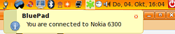

BluePad
Archivierte Anleitung
Dieser Artikel wurde archiviert, da er - oder Teile daraus - nur noch unter einer älteren Ubuntu-Version nutzbar ist. Diese Anleitung wird vom Wiki-Team weder auf Richtigkeit überprüft noch anderweitig gepflegt. Zusätzlich wurde der Artikel für weitere Änderungen gesperrt.
Zum Verständnis dieses Artikels sind folgende Seiten hilfreich:
BluePad  verwandelt ein Java-fähiges Mobiltelefon in eine Bluetooth-Fernsteuerung für den Computer. Es basiert auf zwei Programmen: das eine wird auf dem Computer und das andere auf dem Mobiltelefon installiert.
verwandelt ein Java-fähiges Mobiltelefon in eine Bluetooth-Fernsteuerung für den Computer. Es basiert auf zwei Programmen: das eine wird auf dem Computer und das andere auf dem Mobiltelefon installiert.
Merkmale:
Computer-Präsentationen mit dem Mobiltelefon steuern
Musik und Filme auf dem Computer mit dem Mobiltelefon fernbedienen
Das Mobiltelefon als Spielcontroller für Computerspiele nutzen
Einfache Installation und Bedienung
Einfache Einstellung der Tastatur von PC und Mobiltelefon vom Mobiltelefon aus
Betriebssystem unabhängig, da auf jedem Java-fähigem Mobiltelefon lauffähig
Mehrsprachige Bedienoberfläche (Englisch, Portugiesisch und Spanisch)
Vorbereitung¶
Bluepad setzt zur Datenübermittlung auf Java auf. Um es erfolgreich einsetzen zu können, müssen drei Voraussetzungen erfüllt sein:
Das Mobiltelefon muss Java-Programme verarbeiten können
Das Mobiltelefon muss mittels Bluetooth, Infrarot oder seriellem Kabel mit dem Rechner kommunizieren können
Das Mobiltelefon muss eine Bildschirmgröße von mindestens 34x45 mm besitzen.
Installation¶
BluePad liegt nicht in den Ubuntu-Paketquellen vor, kann aber als einzelnes Paket geladen werden.
Beim SourceForge-Projekt bluepad werden DEB-Pakete angeboten. Die unterstützten Ubuntuversionen und Architekturen werden aufgelistet. Nachdem man sie für die korrekte Ubuntuversion und Architektur geladen hat, müssen DEB-Pakete noch installiert werden.
Hinweis!
Fremdpakete können das System gefährden.
Nach der Installation kann man Bluepad über "Anwendungen -> Unterhaltungsmedien -> Bluepad" starten [2]. Allerdings werden Root-Rechte benötigt.
Bedienung¶
Die Bedienung von Bluepad ist recht simpel gestrickt. Als erstes wird Bluepad auf dem Computer gestartet [2]. Nun sollte Bluepad im Benachrichtigungsfeld des GNOME Panels in grauer Farbe erscheinen.
Das bedeutet, dass es keine Verbindung zu einem Mobiltelefon gibt. Nun wird Bluepad für das Mobiltelefon von der Entwicklerseite heruntergeladen (BluePad für Java fähige Mobiltelefone) und darauf transferiert.
Im nächsten Schritt wird Bluetooth und Bluepad auf dem Mobiltelefon gestartet. Man hat jetzt die Wahl zur gewünschten Sprache. Danach drückt man die Zifferntaste 5 auf dem Mobiltelefon. Es wird nun das Hauptmenü mit verschiedenen Profilen angezeigt. Möchte man eines der Profile starten, sollte man zuerst mit dem Computer verbinden.
Hinweis:
Zu beachten ist, das der eventuell vorhandene Joystick nicht auf jedem Mobiltelefon erkannt wird und deshalb auch nicht benutzt werden kann. Durch das Menü blättern kann man dann mit der 2 und 8 .
 Dazu "Choose Device" auf dem Mobiltelefon starten und die Suche starten. Wenn diese erfolgreich war, kann man auf dem Computer verbinden. Die Frage, ob man die Nutzung von Verbindungsanwendungen durch Anwendung erlauben möchte, bejaht man.
Zum Schluss wird vom Computer auf das Mobiltelefon verbunden. Dazu startet man die Einstellungen von "Bluepad" im Tray des GNOME Panels mit einem  -Klick auf dessen Symbol und sucht nach Bluetooth Geräten. Ist die Suche erfolgreich, wird auf das Mobilgerät verbunden und es erscheint das Bluepad-Symbol im Tray in blauer Farbe samt einer Benachrichtigung, dass das Mobiltelefon verbunden wurde.
-Klick auf dessen Symbol und sucht nach Bluetooth Geräten. Ist die Suche erfolgreich, wird auf das Mobilgerät verbunden und es erscheint das Bluepad-Symbol im Tray in blauer Farbe samt einer Benachrichtigung, dass das Mobiltelefon verbunden wurde.
Jetzt verlässt man das Verbindungsmenü des Mobiltelefons und startet eines der gewünschten Profile.
Profile¶
Presentation¶
Das Profil für Bildschirmpräsentationen wie z.B. die OpenOffice Präsentation gedacht. Nach Aufruf sind die Tasten für Vollbild, Folie zurück, Folie vorwärts und Schließen bereits vorgegeben und werden angezeigt. Per Standard ist der eventuell vorhandene Joystick auf dem Mobiltelefon dafür gedacht, das man die Folien durchblättert. Löst der Joystick allerdings keine Reaktion aus, muss man die Tastenkürzel verändern.
Auf dem getesteten Nokia 6300 kann man die Taste für "Zurück" zum Beispiel auf die Taste 4 und die Taste für "Vorwärts" zum Beispiel auf die Taste 6 legen. Wählt man auf dem Mobiltelefon "Configure" aus, kann man die vorgegebene Taste entweder für die Steuerung am Computer oder für das Mobiltelefon abändern. Für den Start der Bildschirmpräsentation ist die Taste auf F5 abzuändern, denn nur diese Taste löst den Start in OpenOffice Präsentation aus.
Movie¶
Wie der Name schon sagt, für die Steuerung von Multimediaplayern wie z.B. Totem gedacht. Startet man dieses Profil, sind die Tasten für Vollbild, Start, Pause, Stop, Schließen und Lautstärke senken und erhöhen bereits vorgegeben und werden angezeigt. Diese lassen sich natürlich wieder abändern und individuell anpassen mit einem  -Klick auf "Configure". Dabei wieder beachten, dass man die Funktionstasten sowohl für den Computer als auch für das Mobiltelefon einstellen kann.
-Klick auf "Configure". Dabei wieder beachten, dass man die Funktionstasten sowohl für den Computer als auch für das Mobiltelefon einstellen kann.
Game¶
Wie erwähnt, kann man aus einem Bluetooth-fähigem Mobiltelefon einen vollwertigen Spielkontroller für seinen Computer machen. Dieses Profil ist für die Steuerung von Spielen gedacht. Startet man das Profil, sind die Tasten für die Pfeiltasten und gleichzeitig typische Ego-Shooter-Steuerungen bereits vorgegeben und werden angezeigt. Diese lassen sich natürlich wieder abändern und individuell anpassen mit einem -Klick auf "Configure". Dabei wieder beachten, dass man die Funktionstasten sowohl für den Computer als auch für das Mobiltelefon einstellen kann.
Steuerung¶
Die folgende Tabelle gibt eine Übersicht über die Befehle, die sich mittels der Mobiltelefon-Tastatur an den Computer senden lassen:
| Modus | Mobiltelefon Taste | Computer Taste | Wirkung |
| Präsentation | 1 | F5 | Vollbild |
| ← | ← | Folie zurück | |
| → | → | Folie vorwärts | |
| 0 | Esc | Präsentation schließen | |
| Movie | 1 | F5 | Vollbild |
| 5 | P | Start | |
| 8 | Pause | ||
| 2 | S | Stop | |
| → | → | Nächstes Kapitel | |
| ← | ← | Voriges Kapitel | |
| 0 | Esc | Film beenden | |
| ↑ | Lautstärke erhöhen | Lautstärke erhöhen | |
| ↓ | Lautstärke senken | Lautstärke senken | |
| Game | ↑ | ↑ | oben |
| ↓ | ↓ | unten | |
| → | → | rechts | |
| ← | ← | links | |
| 1 | A | Auswahl "A" | |
| 2 | B | Auswahl "B" | |
| 4 | C | Auswahl "C" | |
| 5 | D | Auswahl "D" | |
| 8 | Esc | Start | |
- Erstellt mit Inyoka
-
 2004 – 2017 ubuntuusers.de • Einige Rechte vorbehalten
2004 – 2017 ubuntuusers.de • Einige Rechte vorbehalten
Lizenz • Kontakt • Datenschutz • Impressum • Serverstatus -
Serverhousing gespendet von